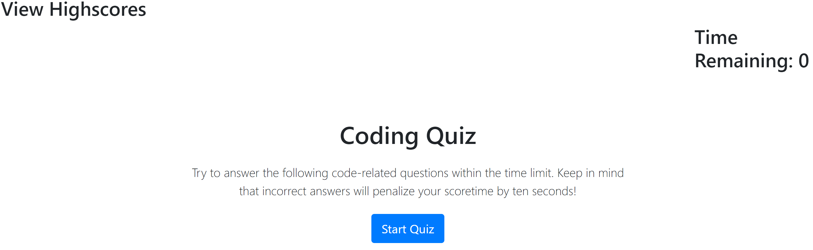
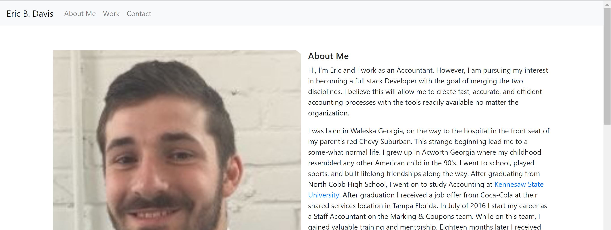

<html lang="en-us"></html>

<head>
    <meta charset="UTF-8" />
    <meta name="viewport" content="width=device-width, initial=scale=1">
    <link rel="stylesheet" href="./style.css">
    <link rel="stylesheet" href="https://stackpath.bootstrapcdn.com/bootstrap/4.5.0/css/bootstrap.min.css" integrity="sha384-9aIt2nRpC12Uk9gS9baDl411NQApFmC26EwAOH8WgZl5MYYxFfc+NcPb1dKGj7Sk" crossorigin="anonymous">
    <title>Eric Davis Portfolio</title>
</head>

<body>
    <div class="container">
        <div class="sub-container">
        <nav class="navbar navbar-expand-lg navbar-light bg-light fixed-top">
            <a class="navbar-brand" href="#">Eric B. Davis</a>
            <button class="navbar-toggler" type="button" data-toggle="collapse" data-target="#navbarNavDropdown" aria-controls="navbarNavDropdown" aria-expanded="false" aria-label="Toggle navigation">
              <span class="navbar-toggler-icon"></span>
            </button>
            <div class="collapse navbar-collapse" id="navbarNavDropdown">
              <ul class="navbar-nav">
                <li class="nav-item">
                  <a class="nav-link" href="#AboutMe">About Me</a>
                </li>
                <li class="nav-item">
                  <a class="nav-link" href="#Work">Work</a>
                </li>
                <li class="nav-item">
                    <a class="nav-link" href="#Contact">Contact</a>
                  </li>
              </ul>
            </div>
        </nav>
        </div>

        <div class="sub-container">
        <div>
            
            <div class="media-body">
              <h5 class="mt-0"><a id="AboutMe">About Me</a></h5>
            <p>
                Hi, I'm Eric and I work as an Accountant. However, I am pursuing my interest in becoming a full stack Developer with the goal of merging the two disciplines. I believe this will allow me to create fast, accurate, and efficient accounting processes with the tools readily available no matter the organization.
            </p>
       
            <p>
                I was born in Waleska Georgia, on the way to the hospital in the front seat of my parent's red Chevy Suburban. This strange beginning lead me to a some-what normal life. I grew up in Acworth Georgia where my childhood resembled any other American child in the 90's. I went to school, played sports, and built lifelong friendships along the way. After graduating from North Cobb High School, I went on to study Accounting at<a class="link" href="https://www.kennesaw.edu/"> Kennesaw State University.</a> After graduation I received a job offer from Coca-Cola at their shared services location in Tampa Florida. In July of 2016 I start my career as a Staff Accountant on the Marking & Coupons team. While on this team, I gained valuable training and mentorship. Eighteen months later I received and offer for a Senior Accountant position on the Fixed Assets team. It was here my interest in accounting systems and programing in general began to flourish. As a member of this team, I had the opportunity to work with programmer located in India. They were hired to automate the accounting process and it was my job to teach it to them. I taught them everything form beginning to end. Each piece require to close out the period. In doing this, I became curious. I began researching how SAP worked and what additional functionality Excel had. It was here I got my first taste of programming through VBA and Macros. Within a few months outside of my regular duties, I was able to replicate what the programers where doing using only SAP and Excel.
            </p>
    
            <p>
                I had found a spark. Something I enjoyed and wanted to learn more about. Unfortunately, family matters arose and I had to leave my job in Tampa to move back to Atlanta. Since moving back to Atlanta, I have bounced around from a few jobs at the Senior Accountant level. These jobs ranged from small family owned manufacturing organizations to mid-sized equity owned engineering testing. Not to mention my prior experience at Coca-Cola. I began to find myself in an odd place. I wanted to continue being an accountant, but I also wanted to learn more about computer programing. I was lost and unsure of what to do. So, I decided to further my education in accounting and earned my Masters in Accounting from<a class="link" href="https://www.georgiasouthern.edu/"> Georgia Southern University.</a> I continued on working as a Senior Accountant. After a few months, I kept noticing the need for my team to have a highly computer literate accountant on the team. Someone who understood the inner workings of the accounting system as well as Microsoft products like Excel and Access.
            </p>
    
            <p>
                I firmly believe that the accounting departments across any organization do not maximize the use of the software at hand. Time after time, I see organization going out and purchasing software to complete a relatively easy task all because they do not truly understand Excel or NetSuite or Access or SAP or etc. From an accounting perspective this makes no sense. It's cheaper to retain an employee than hire a new one, this too should be applied to software. 
            </p>
    
            <p>
                This is why I found myself in the <a class="link" href="https://bootcamp.pe.gatech.edu/coding/"> Georgia Tech Coding Boot Camp.</a> To become that accountant and find an organization willing enough to trust in my abilities to enact change for the betterment! 
            </p>
    
        </div>
        </div>

        <div class="sub-container">
            <h5 class="mt-0"><a id="Work">Work</a></h5>
            <div class="row">
                <div class="col-sm">
                  Code Quiz
                  <a href="https://edavis56.github.io/Homework-Four/">
                  </img></a>
                </div>
            </div>
                
                <div class="row">
                  <div class="col-sm">
                    Code Refactoring
                    <a href="https://edavis56.github.io/Homework-One/">
                    </img></a>
                  </div>
                  <div class="col-sm">
                    Portfolio
                    <a href="https://edavis56.github.io/Homework-Two/">
                    </img></a>
                  </div> 
                  <div class="col-sm">
                    GitHub Repo
                    <a href="https://github.com/edavis56">
                    </img></a>
                  </div>
                </div>
          </div>
          
        <div class="sub-container">
          <h5 class="mt-0"><a id="Contact">Contact</a></h5>
          <a href="https://www.linkedin.com/in/ericbdavis00/"><svg xmlns="http://www.w3.org/2000/svg" width="80" height="80" fill="currentColor" class="bi bi-linkedin" viewBox="0 0 16 16">
            <path d="M0 1.146C0 .513.526 0 1.175 0h13.65C15.474 0 16 .513 16 1.146v13.708c0 .633-.526 1.146-1.175 1.146H1.175C.526 16 0 15.487 0 14.854V1.146zm4.943 12.248V6.169H2.542v7.225h2.401zm-1.2-8.212c.837 0 1.358-.554 1.358-1.248-.015-.709-.52-1.248-1.342-1.248-.822 0-1.359.54-1.359 1.248 0 .694.521 1.248 1.327 1.248h.016zm4.908 8.212V9.359c0-.216.016-.432.08-.586.173-.431.568-.878 1.232-.878.869 0 1.216.662 1.216 1.634v3.865h2.401V9.25c0-2.22-1.184-3.252-2.764-3.252-1.274 0-1.845.7-2.165 1.193v.025h-.016a5.54 5.54 0 0 1 .016-.025V6.169h-2.4c.03.678 0 7.225 0 7.225h2.4z"/>
          </svg></a>

          <a href="mailto:ericd4736@gmail.com"><svg xmlns="http://www.w3.org/2000/svg" width="80" height="80" fill="currentColor" class="bi bi-envelope-fill" viewBox="0 0 16 16" clas>
            <path d="M.05 3.555A2 2 0 0 1 2 2h12a2 2 0 0 1 1.95 1.555L8 8.414.05 3.555ZM0 4.697v7.104l5.803-3.558L0 4.697ZM6.761 8.83l-6.57 4.027A2 2 0 0 0 2 14h12a2 2 0 0 0 1.808-1.144l-6.57-4.027L8 9.586l-1.239-.757Zm3.436-.586L16 11.801V4.697l-5.803 3.546Z"/>
          </svg></a>
            
            

        </div>
        </div>
    </div>